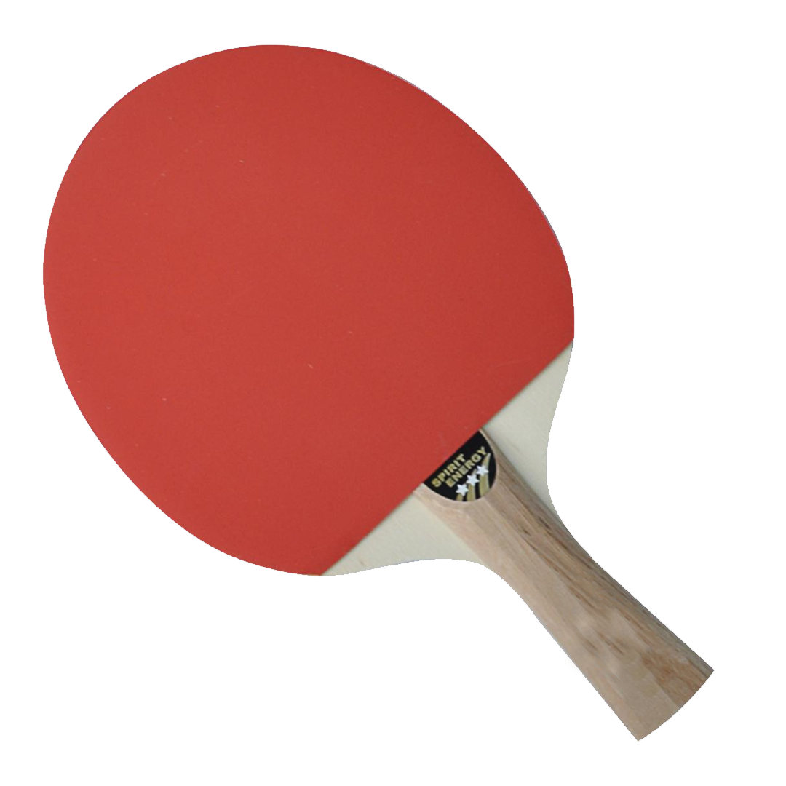
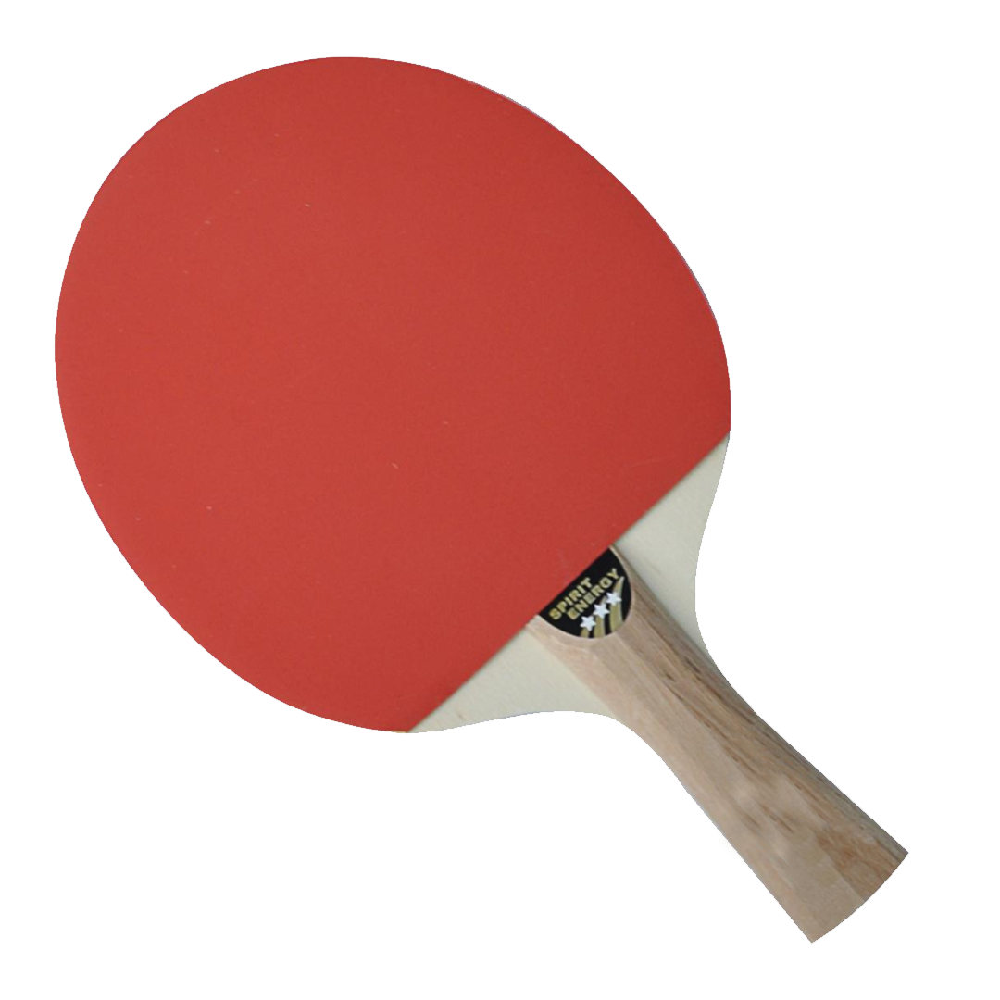
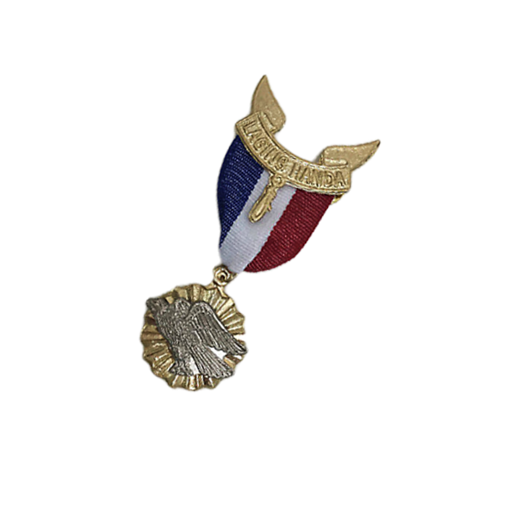
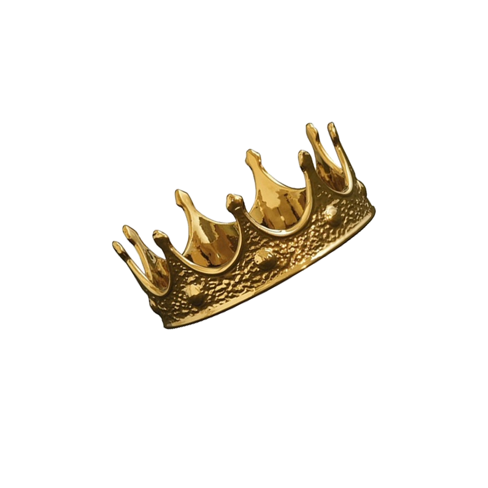
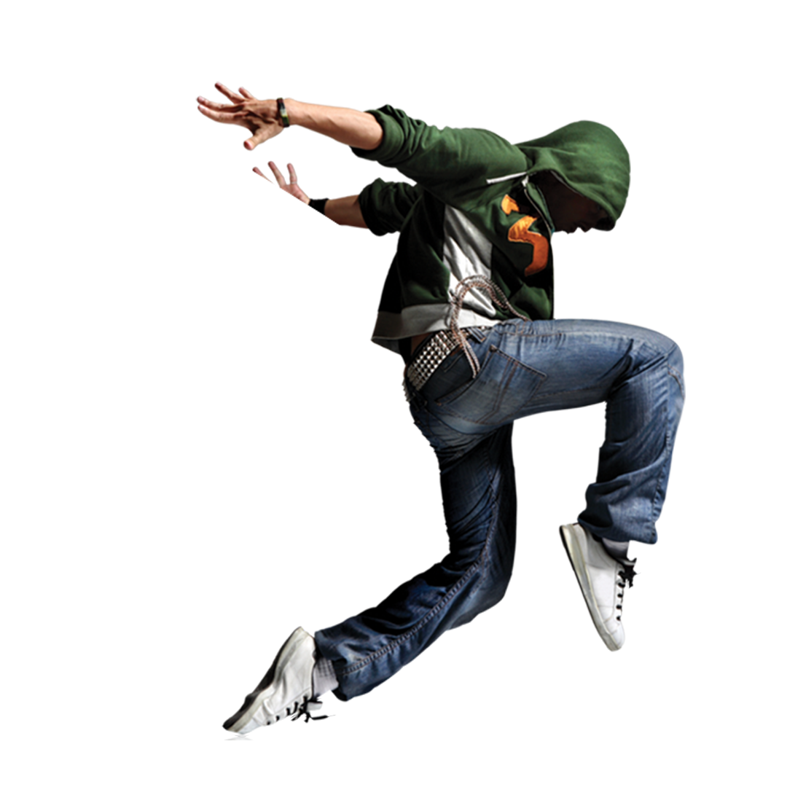
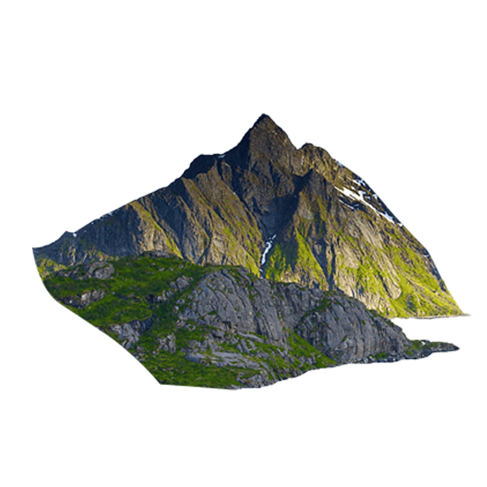

Tabletennis
Tabletennis
Tabletennis
I began playing tabletennis at the age of 12
and continued through junior high school.
I was able to compete at the District Level,
but there were too many talented players,
so I focused on my other abilities.

Eagle
Because I have a sense of adventure, I continued to participate in scouting
that started since elementary school. It also led to a love of outdoors
and the opportunity to meet individuals from all across the city. I learned
a lot and had a lot of fun being resourceful. I've attained the Eagle Scout
rank, which made me a lot stronger and more capable scout.
Camera
I first became interested in movies while
I was in eighth grade, when I was working on a project
that had to be completed. I've been putting my heart and soul into
filmmaking since then, and it's gotten me into competitions.
I continue to watch movies for pleasure and as a reference.
Newswsw
swswswss
I entered the field of journalism with no prior experience.
It simply compelled me and my friends to participate.
Unknowingly, it will lead me on a joyful road
with some difficult moments. But with this, I aspired
to be a journalist but it's not destined for me.

crownrwrwnrnwnrw
I competed in the pageant three times and came in first runner-up each time.
It was a humorous story about how I didn't receive the crown. It does, however,
enhance my confidence and allow me to communicate openly. During that time,
my given number was eight, which I consider to be my lucky number.

dancececece
dancececece
dancececece
I've always enjoyed performing, therefore,
I've had a passion for dance since I was a child.
I had these images that my aunt took of me,
and it was in those photos that I fell in love with
the color yellow since it was the color of our clothes.

mount
mount
mount
mount
mount
mount
Since I was a scout, nature has taught me to appreciate her.
Nature allows me to let go of bad energy, relax, and think clearly.
It also brings back wonderful recollections of my scouting days.
Hiking and relaxing on the beach are two of my favorite activities.